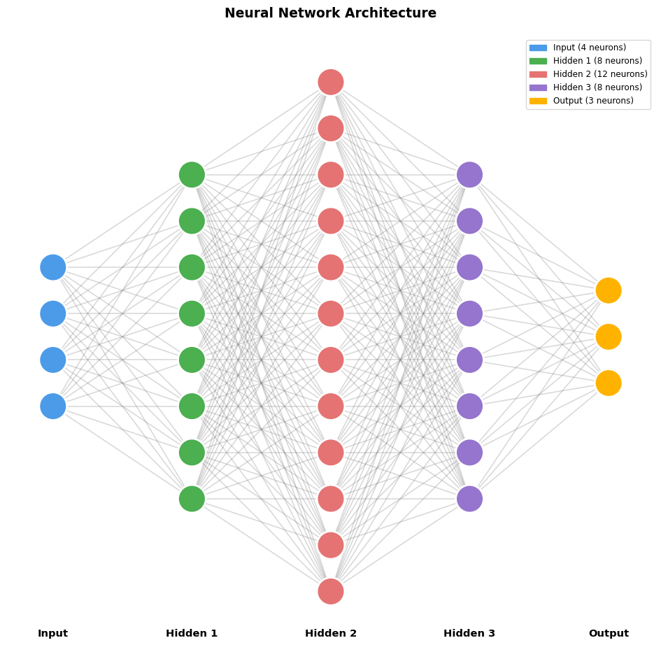

# First, let's import PyTorch
import torch
print(f"PyTorch version: {torch.__version__}")
print(f"GPU available: {torch.cuda.is_available()}")PyTorch version: 2.5.1
GPU available: FalsePyTorch is a framework that handles the heavy lifting of neural networks:
| Component | What PyTorch Does |
|---|---|
| Weights & Biases | Stores them as “tensors” (fancy arrays) that can run on GPUs |
| Forward Pass | Computes outputs from inputs |
| Backward Pass | Automatically calculates gradients for learning |
| Optimisers | Updates weights to improve the model |
# First, let's import PyTorch
import torch
print(f"PyTorch version: {torch.__version__}")
print(f"GPU available: {torch.cuda.is_available()}")PyTorch version: 2.5.1
GPU available: FalseIn PyTorch, we define a neural network as a Python class. Here’s a simple one with:
from torch import nn
class SimpleClassifier(nn.Module):
"""
A simple multi-class classifier
"""
def __init__(self, input_size, hidden_sizes, num_classes):
super().__init__()
# The layers with weights and biases
self.layer_sizes = [input_size, *hidden_sizes, num_classes]
self.layers = nn.ModuleList(
[nn.Linear(i, o) for (i, o) in zip(self.layer_sizes[:-1], self.layer_sizes[1:])]
)
# Activation function (adds non-linearity)
self.relu = nn.ReLU()
def forward(self, x):
"""This defines how data flows through the network"""
# We have layer -> activation -> layer -> activation -> ...
# up until the last layer of the network, for which there is
# no activation
for layer in self.layers[:-1]:
x = layer(x)
x = self.relu(x)
return self.layers[-1](x)
# Create an instance: 4 inputs, 8 hidden neurons, 3 output classes
model = SimpleClassifier(
input_size=4,
hidden_sizes=[8, 12, 8],
num_classes=3,
)import matplotlib.pyplot as plt
import matplotlib.patches as mpatches
import numpy as np
def plot_model_architecture(model):
layer_sizes = model.layer_sizes
n_layers = len(layer_sizes)
max_neurons = max(layer_sizes)
colors = ["#4C9BE8", "#4CAF50", "#E57373", "#9575CD", "#FFB300"]
layer_names = ["Input"] + [f"Hidden {i}" for i in range(1, n_layers - 1)] + ["Output"]
# Fix figure size to keep aspect ratio balanced
fig_width = n_layers * 2
fig_height = max_neurons * 0.8
fig, ax = plt.subplots(figsize=(fig_width, fig_height))
# Use equal numeric spacing
x_spacing = 3
y_spacing = 1
ax.set_xlim(-1, (n_layers - 1) * x_spacing + 1)
ax.set_ylim(-1, (max_neurons - 1) * y_spacing + 1)
ax.set_aspect("equal") # <-- key fix for round circles
ax.axis("off")
neuron_positions = []
for layer_idx, n_neurons in enumerate(layer_sizes):
color = colors[layer_idx % len(colors)]
x = layer_idx * x_spacing
# Center neurons vertically
total_height = (n_neurons - 1) * y_spacing
y_start = (max_neurons - 1) / 2 - total_height / 2
ys = [y_start + i * y_spacing for i in range(n_neurons)]
neuron_positions.append((x, ys))
for y in ys:
circle = plt.Circle((x, y), 0.3, color=color, zorder=3,
ec="white", linewidth=2)
ax.add_patch(circle)
# Draw connections — slightly thicker edges
for i in range(len(neuron_positions) - 1):
x1, ys1 = neuron_positions[i]
x2, ys2 = neuron_positions[i + 1]
for y1 in ys1:
for y2 in ys2:
ax.plot([x1, x2], [y1, y2], color="gray", alpha=0.3, lw=1.2, zorder=1)
# Labels below each layer
for layer_idx, name in enumerate(layer_names):
x = layer_idx * x_spacing
ax.text(x, -0.8, name, ha="center", va="top", fontsize=11, fontweight="bold")
# Legend
legend_labels = [f"{name} ({n} neurons)" for name, n in zip(layer_names, layer_sizes)]
patches = [mpatches.Patch(color=colors[i % len(colors)], label=legend_labels[i])
for i in range(n_layers)]
ax.legend(handles=patches, loc="upper right", fontsize=9)
plt.title("Neural Network Architecture", fontsize=14, fontweight="bold", pad=20)
plt.tight_layout()
plt.show()
plot_model_architecture(model)
The network has randomly initialised weights and biases. These are the numbers that will be adjusted during training.
# Let's look at the parameters in layer 1
print("Layer 1 weights shape:", model.layers[0].weight.shape)
print("Layer 1 biases shape:", model.layers[0].bias.shape)
print("\nActual weight values (randomly initialised):")
print(model.layers[0].weight.data)
# Count total parameters
total_params = sum(p.numel() for p in model.parameters())
print(f"\nTotal trainable parameters: {total_params}")Layer 1 weights shape: torch.Size([8, 4])
Layer 1 biases shape: torch.Size([8])
Actual weight values (randomly initialised):
tensor([[-0.0409, 0.2906, -0.2916, 0.1669],
[-0.4947, 0.0402, -0.0019, 0.3742],
[-0.1108, 0.3027, 0.0758, -0.0428],
[ 0.3852, 0.3081, 0.1019, 0.2870],
[-0.2278, -0.2727, 0.2131, 0.3602],
[-0.4296, 0.0784, -0.4528, -0.3668],
[-0.1859, -0.0060, 0.3338, 0.1765],
[-0.1159, 0.3690, -0.3386, 0.4561]])
Total trainable parameters: 279Let’s pass some fake data through our network. The output will be meaningless (we haven’t trained it yet!), but this shows how data flows through.
# Create some fake input data: 1 sample with 4 features
fake_input = torch.tensor([[5.1, 3.5, 1.4, 0.2]])
# Pass it through the network
output = model(fake_input)
print("Input shape:", fake_input.shape)
print("Output shape:", output.shape)
print("\nRaw output (logits):", output)
# Convert to probabilities using softmax
probabilities = torch.softmax(output, dim=1)
print("\nAs probabilities:", probabilities)
print(f"\nPredicted class: {probabilities.argmax().item()}")Input shape: torch.Size([1, 4])
Output shape: torch.Size([1, 3])
Raw output (logits): tensor([[0.2568, 0.0440, 0.2851]], grad_fn=<AddmmBackward0>)
As probabilities: tensor([[0.3525, 0.2849, 0.3626]], grad_fn=<SoftmaxBackward0>)
Predicted class: 2The prediction above was random because our network hasn’t learned anything yet. Training is where the magic happens!